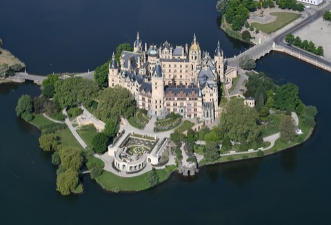

ベルリンから直通の普通列車で2時間40分。ホテルのチェックイン予定（13:00〜14:00）に合わせた便と、城の回り方です。
| 便 | ベルリン中央駅 発 | 乗換 | シュヴェリーン中央駅 着 | 料金 | 評価 |
|---|---|---|---|---|---|
| 本命 | 10:25 RE8 · 8番線 | 直通 2h42 | 13:07 | €30 / D-Ticket可 | ホテル到着予定13:00〜14:00にぴったり |
| 速い | 10:09 ICE 804 · 8番線 | Ludwigslust 11:16着 → 11:29 RE8（同一ホーム） | 12:00 | €49.99〜 | 1時間早く着く |
| 早朝 | 08:46 RE5 | Güstrow → Bützow → ICE（乗換2回） | 11:54 | €40.99〜 | 乗換が多い。おすすめしない |
| 遅め | 12:08 ICE 802 | Ludwigslust → RE8 | 14:00 | €53.99〜 | チェックイン予定を過ぎる |

| 時刻 | 駅 | 何をするか | 所要 |
|---|---|---|---|
| 10:05 | Berlin Hbf | 地下 8番線へ。RE8「Wismar 行き」は2階建ての普通列車、全席自由。日曜午前は空いているが荷物があるので早めに | — |
| 10:25 | Berlin Hbf 8番線 | RE8 発。Nauen → Wittenberge → Ludwigslust → Schwerin。21駅停車、2時間42分。車内販売なし、飲み物は駅で | — |
| 13:07 | Schwerin Hbf 2番線着 | 地下道で駅舎へ。駅前広場（Grunthalplatz）に出る | 3分 |
| 13:10 | 駅前 → ホテル | 駅前広場から北東へ。Wismarsche Straße を渡って Alexandrinenstraße へ。Hotel Niederländischer Hof（12–13番地）はプファッフェン池（Pfaffenteich）の北西角 | 3分 |
| 13:45 | ホテル → 城 | Alexandrinenstraße を南へ → プファッフェン池の西岸（Arsenalstraße）→ 池の南端で Mecklenburgstraße へ → 南へ直進 → Schlossstraße → 橋を渡って城 | 17分 |
| 18:00 | 城 → 旧市街（夕食） | Schlossstraße を戻って Markt（マルクト広場）。大聖堂の塔が目印 | 10分 |
| 翌 9/21 朝 | Schwerin Hbf | ノートは「シュヴェリーン → ケルン 5h → ハイデルベルク 2h」。Hamburg Hbf 乗換の ICE が基本（Schwerin → Hamburg RE/IC 1時間、Hamburg → Köln ICE 4時間、Köln → Heidelberg ICE 2時間）。この日のうちに DB Navigator で予約。ホテルから駅3分なので朝食後でも間に合う | — |
各施設の公式サイトで休止・改修・臨時休業の有無を確認した結果です。出発直前にもう一度、各リンク先を見てください。
| スポット | 状態 | 内容 |
|---|---|---|
| シュヴェリーン城博物館 | 営業 | 公式（Staatliche Schlösser M-V）に9月の休止案内なし。9/1〜10/14 は火〜日、公開ガイドツアー 11:00 と 13:30。庭園は枝折れ・火災リスクで一部立入制限の可能性あり |
| ホテル | 営業 | 9/20 14:00 までキャンセル無料。到着予定 13:00〜14:00 は連絡済み |
写真はすべて Wikimedia Commons の自由ライセンス作品です。アニメの画面は著作物のため掲載していません。
出典：DB 時刻表（2026/9/20 検索） · シュヴェリーン城 料金・時間 · 州議会 城博物館 · VBB RE8
.jpg){kind=link}